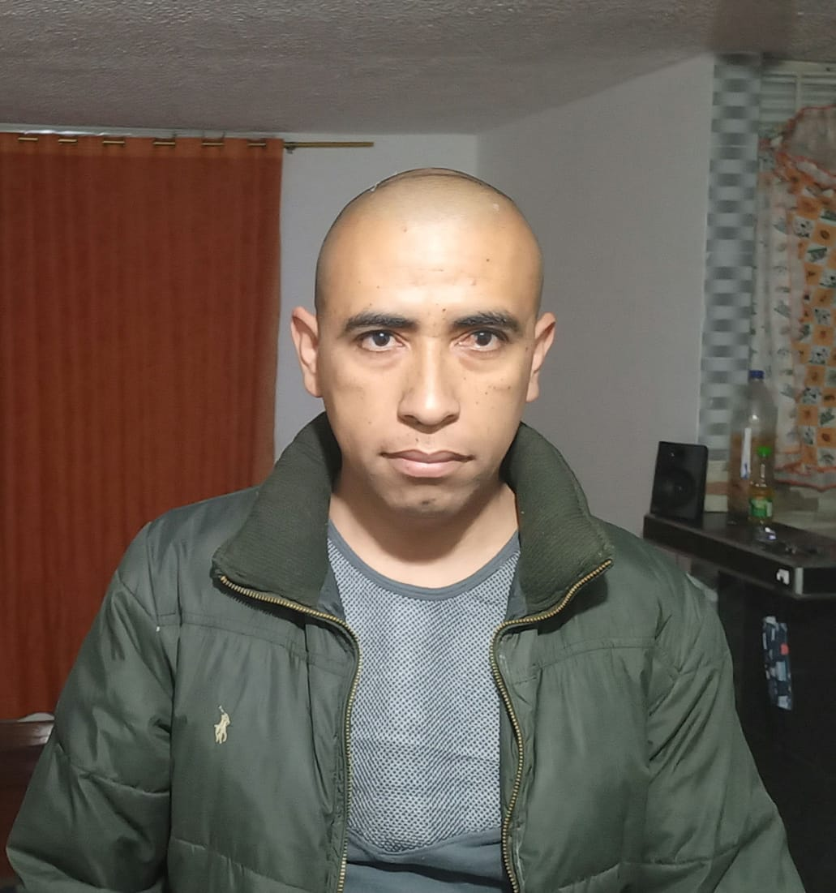

Yo, Jose Miguel Fuentes Verdecia
Descripción Personal:
Hola a todos, soy nacido en la ciudad de Valledupar departamento del cesar en Colombia, el 8 de octubre de 1985
donde me crie la mayoría del tiempo con los pies descalzos, entre la pobreza y la alegría de ser niño; casi siempre jugando
a la pelota con mis vecinos y compañeros del colegio, al cumplir la mayoría de edad ingresé al ejército de mi país
donde conocí la maldad y la otra cara de la moneda que muchas personan ignoran de la violencia de un país como este,
después de esto comencé a vivir en la capital de Colombia Bogotá donde aprendí a sobrevivir durante estos últimos años
ahora tengo una hija de 14 años que educamos junto a mi esposa, junto con un anhelo de avanzar a través de los peldaños de la vida
pero a otro nivel.
En síntesis: Soy una persona entusiasta, interesada en las buenas conductas, quien suele buscar soluciones evitando crear problemas,
amante del conocimiento y el aprendizaje.
Educación:
Estudios Primarios:
Escuela mixta 5 de enero Valledupar
Finalizado en 1996
Estudios Secundarios:
C.E.A.C Bogotá
Finalizacion en 2009
Estudios tecnicos:
Redecomputo:
Tecnico laboral en mantenimiento de equipos de computo.
Finalizado en 2012
Cursos:
SENA:
Ingles Basico I, Ingles Basico II.
Finalizado 15/12/2010
Complementaria Virtual en manejo de
herramientas MICROSOFT OFFICE 2016: EXCEL
Finalizado 11/07/2019
Experiencias Laborales:
1. Vigicoop:
CARGO: Guarda de seguridad
FUNCIONES: Control de acceso de personal a edificio residencial.
Inicio 1/4/2009 — Fin 28/2/2010.
2. Challenger S.A:
CARGO: Auxiliar de seguridad
FUNCIONES: Control de proveedores, verificacion de vehiculos para despachos y seguridad general.
Inicio 1/3/2010 — Fin 4/11/2010.
3. Servision de colombia Ltda.
CARGO: Guarda de seguridad
FUNCIONES: Control de acceso a escuela de investigaciones de la ficalía, recibo de llamadas y atención al cliente.
Inicio 10/11/2010— Fin 21/2/2012.
4. Interservicios S.A.S.
CARGO: Mensajero motorizado.
FUNCIONES: Recibo, distribución de correspondecia y diligencias
asignado al banco de bogota.
Inicio 6/5/2012— Actualmente
Skills:
- Gestión del estrés y presión.
- Capacidad para manejar el conflicto.
- Sentido de las relaciones con los clientes.
- Capacidad de actualizar los conocimientos.
- Capacidad de análisis
- Excel.
- Dominio intermedio del Ingles.
- Flexibilidad.

Hobbies:
Lectura:
Me gusta leer tipo Carlos Cuauhtémoc Sánchez,
libros con contenido anecdótico y enseñanza ética.
Aunque he de reconocer que los la lectura la he
desplazado un poco por audio libros.
Cinéfilo:
Me encanta el cine especialmente el basado en hechos
reales e historicos, como también ciencia ficcíon y la fantasía.
Actividad fisíca:
Suelo disfrutar el trote, la caminata al aire libre sobre todo
cuando la mañana esta fresca y sentir el viento en mi face
mientras las birds cantan recibiendo un nuevo día.
Ahh, y el microfútbol no puede faltar.
Estoy empezando en esto del código, porque además de ser cool siempre me ha gustado la tecnología y trabajar en esta rama sería muy satisfactorio para mi y me ayudaría a mejorar la calidad de vida de mi familia.
Quisiera al finalizar la carrera estar capacitado íntegramente para desarrollar proyectos web, comenzar a ver que nuevas áreas de este conocimiento se perfilan a ser conquistadas.